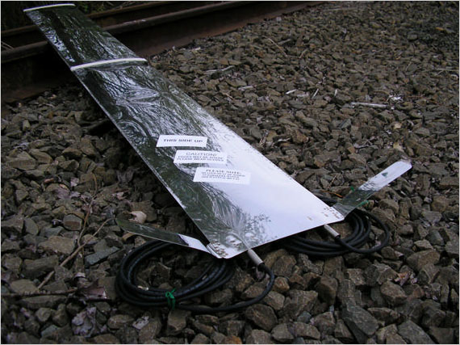
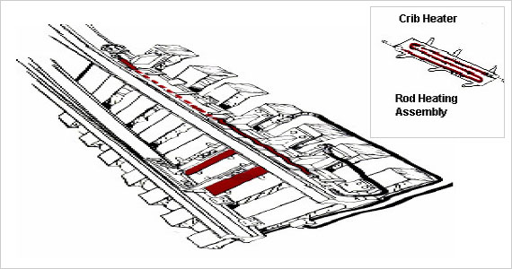
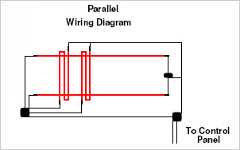

| Thermal-Flex Crib Heaters |
| |
|  |
Description
The Thermal-Flex crib heater is a unique
and necessary component of the switch
heating system. In unison with rail
heaters they provide assistance in snow
and ice removal at the point of switch.
Their main function is to eliminate ice
and snow in the crib area around rods for
easy maintenance. Warming of movable
parts cuts down on repairs to switch
motors, rod joints, and provides a
smoother-working switch. |
| |
|
| Photo was taken at the LS&I, Michigan’s Upper Peninsula |
| |
| The typical Thermal-Flex Crib Heater is 6 feet long
by 9 inches wide to accommodate the crib area under rods.
Modular extensions can be made to extend under the switch
machines. |
| |
| Key Benefits |
ㆍGenerates >300ºF over entire surface
ㆍProvides snow removal for easy rod maintenance
ㆍWater-tight connectors
ㆍEnclosed in stainless steel sheeting
ㆍTie down straps for securing pans to ties
ㆍProvides 300 watts per foot at critical point of switch |
| |
|  |
| |
This illustration is a typical one-loop switch
heating system wired in series. Paraflex model systems are
wired in parallel as illustrated in the drawing to the left.
Both systems are available. |
| |
Path of Heating cable
Path of #8 Direct Burial Wire |
|
 |
|
| |